通勤タクシー・クルーバス
—
匿名で答える
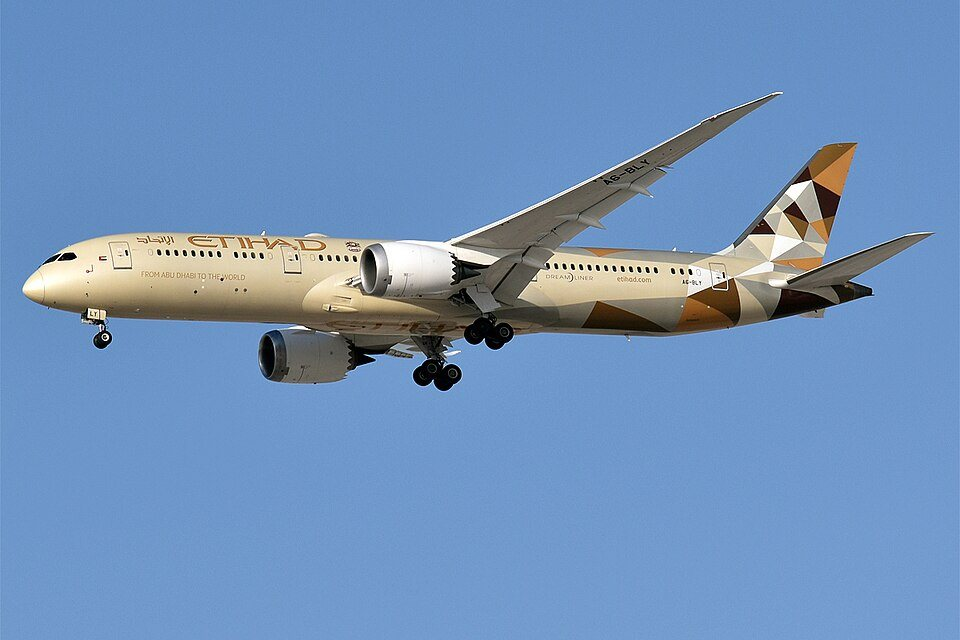
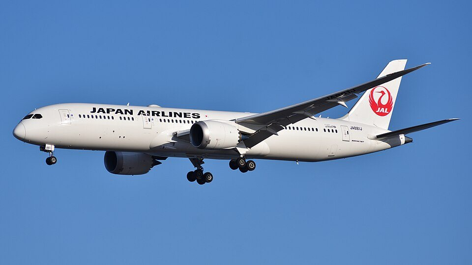
JAL 日本航空（JAL）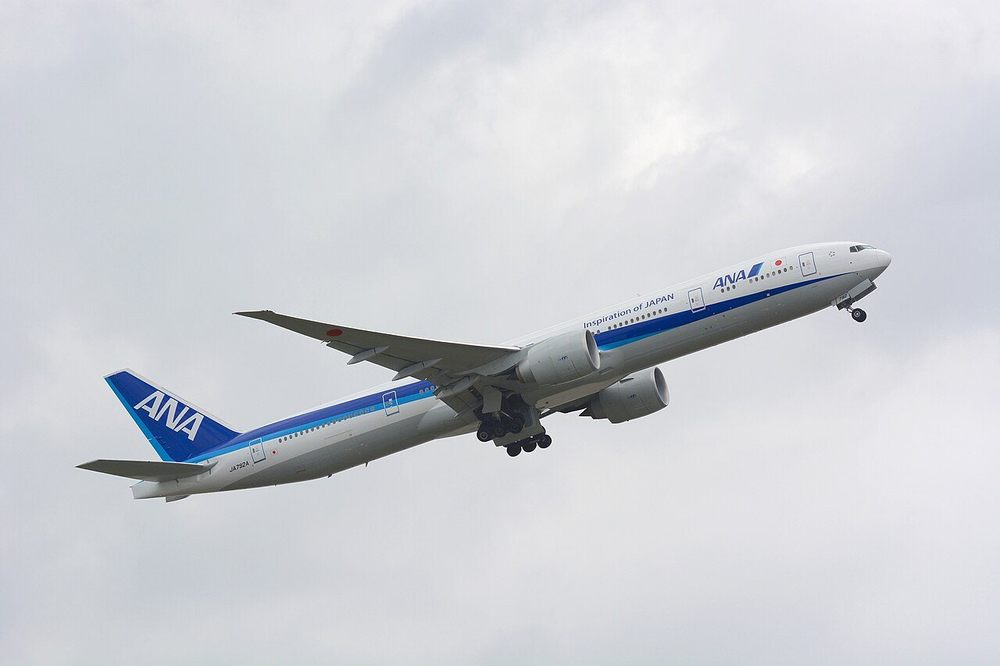
ANA 全日本空輸（ANA）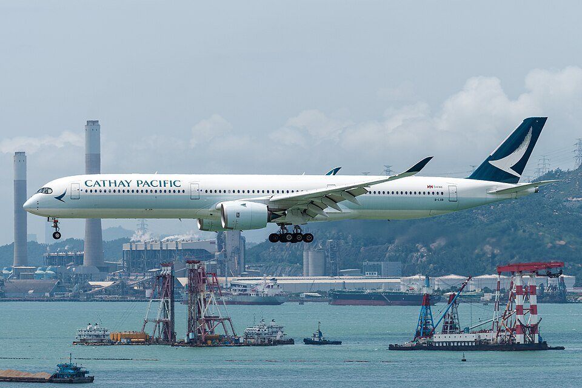
CX キャセイパシフィック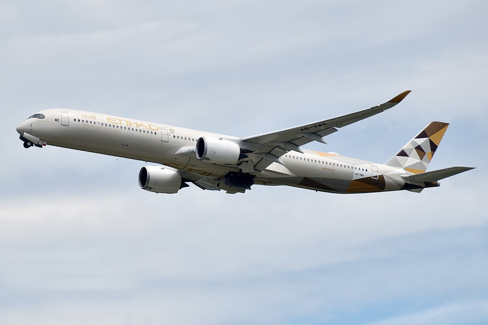
EY エティハド航空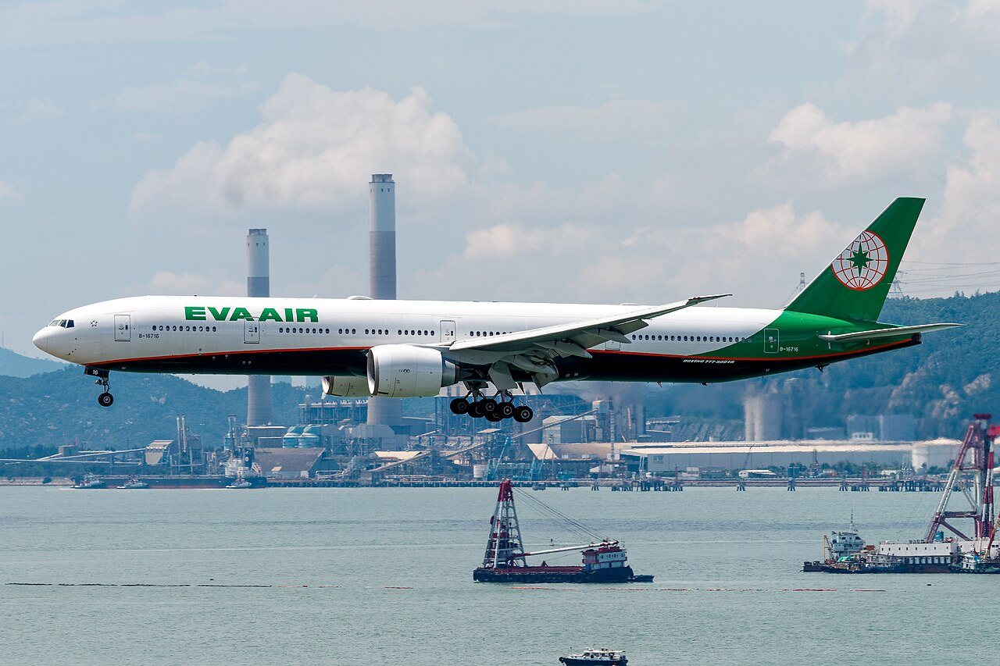
EVA エバー航空 航空会社を比較写真（縮小・トリミング） エティハド航空 Boeing 787-9 Anna Zvereva／CC BY-SA 2.0 日本航空（JAL） 4300streetcar／CC BY 4.0 全日本空輸（ANA） Masakatsu Ukon／CC BY-SA 2.0 キャセイパシフィック Melv_L - MACASR／CC BY-SA 2.0 エティハド航空 Airbus A350-1000 Anna Zvereva／CC BY-SA 2.0 エバー航空 Melv_L - MACASR／CC BY-SA 2.0
課税（日本）
機長機種の指定なし
副操縦士機種の指定なし
平均 運航乗務員（グループ連結・2025年3月期）
平均 運航乗務員（グループ連結・2024年3月期）
写真（縮小・トリミング） 4300streetcar／CC BY 4.0
課税（日本）
機長機種の指定なし
副操縦士機種の指定なし
平均 運航乗務職（ANA／ANAウイングス／エアージャパンの合計・2026年3月期）
写真（縮小・トリミング） Masakatsu Ukon／CC BY-SA 2.0
課税（香港）
機長機種の指定なし
副操縦士機種の指定なし
条件つきの給与例 副操縦士（First Officer）
年次有給 28日
最低総飛行時間 1,500時間（3,000時間が望ましい）・うち機長時間 500時間以上・英語能力証明レベル4以上
条件つきの給与例 二等航空士（Second Officer）
年次有給 21日
最低総飛行時間 250時間
円額は比較用の換算です（1 HKD＝20.2744円・2026-08-22 時点）。現在の為替レートではありません。
写真（縮小・トリミング） Melv_L - MACASR／CC BY-SA 2.0
非課税（UAE に個人所得税なし）
求人の掲載額 機長 A320（求人の上限）
総5,500時間・多人数運航ガラスコックピットの機長時間 2,500時間・A320系の機長時間 1,500時間・直近12か月に A320系・入社日に59歳未満・英語能力証明レベル4以上
求人の掲載額 副操縦士 A320（求人の上限）
A：総2,000時間かつ多人数運航ガラスコックピット1,500時間かつ同型500時間／B：総1,500時間かつ A320系1,000時間。加えて直近12か月に A320系・入社日に50歳未満・英語能力証明レベル4以上
円額は比較用の換算です（1 AED＝43.2825円・2026-08-22 時点）。現在の為替レートではありません。
最初の商業便は2003年11月12日（ベイルート行き）。UAE のナショナル・エアラインで、拠点はアブダビのザーイド国際空港。2026年2月28日時点の運航機材は、短期の借り受け（ACMI）と貨物機を含む128機。2025年の旅客は2,240万人。
2026年2月28日 時点
2026年10月4日に公開中を確認
匿名で答える
匿名で答える
匿名で答える
アブダビAUHザーイド国際空港
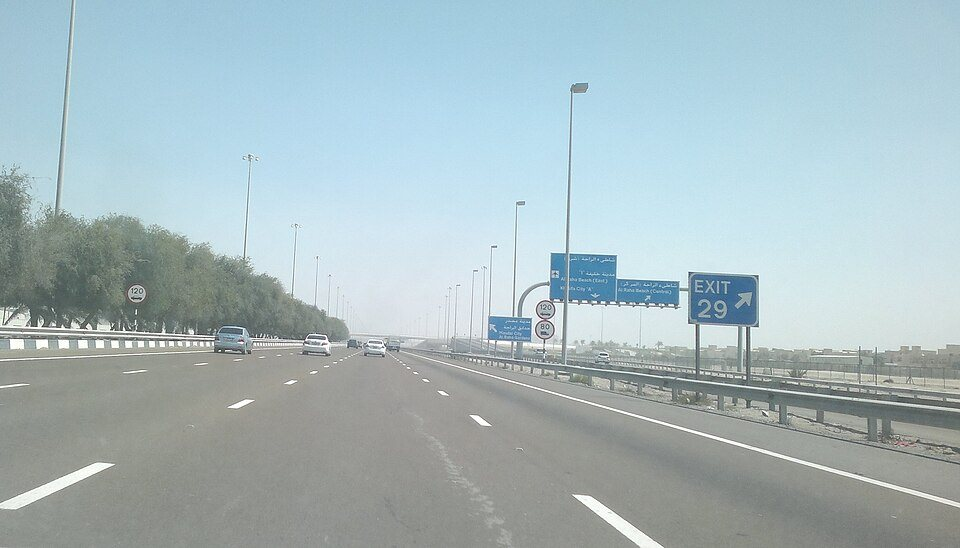
ハリファ・シティ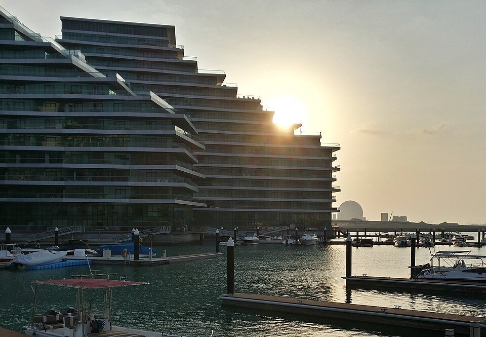
アル・ラハ・ビーチ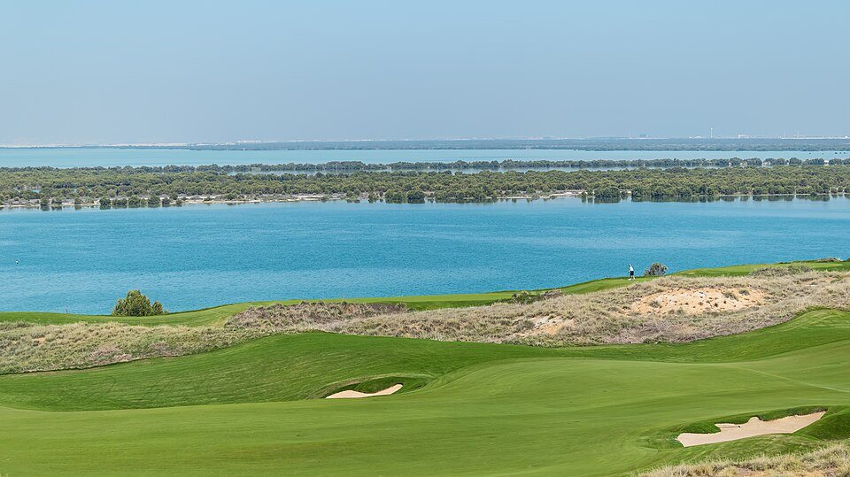
ヤス島Bayut に不動産会社が載せた、入居できる集合住宅の募集家賃の平均（ルームシェアを除く）。成約した額ではない（2026年1〜6月）
出どころの表は1年あたりの額。ここでは12で割って、1か月あたりにしている
円額は比較用の換算です（1 AED＝43.2825円・2026-08-22 時点）。現在の為替レートではありません。
写真（縮小・トリミング） ハリファ・シティ Rizwan Ullah Wazir／CC BY 3.0 アル・リーム島 Sa7er90／CC BY-SA 4.0 アル・ラハ・ビーチ Xcuneo／CC BY-SA 3.0 ヤス島 Tashmetova808／CC BY-SA 4.0
写真（縮小・トリミング） Anna Zvereva／CC BY-SA 2.0
課税（台湾）
機長機種の指定なし
副操縦士機種の指定なし
公式募集例 副操縦士（4年契約）
最低総飛行時間 2,000時間・多人数運航ジェット（最大離陸重量20トン超）500時間・ICAO ATPL・英語能力証明レベル4
円額は比較用の換算です（1 USD＝158.95円・2026-08-22 時点）。現在の為替レートではありません。
写真（縮小・トリミング） Melv_L - MACASR／CC BY-SA 2.0
エティハド航空機長¥3,400万 推定
エティハド航空副操縦士¥2,300万 推定
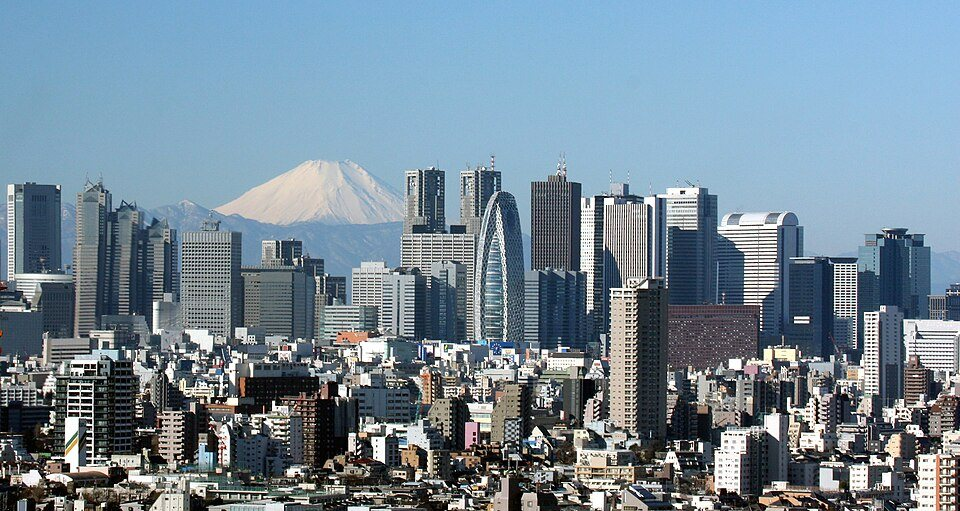
日本
写真（縮小・トリミング） Morio／CC BY-SA 3.0
日本季節便
写真（縮小・トリミング） 663highland／CC BY 2.5
台湾
写真（縮小・トリミング） 毛貓大少爺／CC BY-SA 2.0
香港
写真（縮小・トリミング） Haydn Hsin／CC BY-SA 3.0
韓国
写真（縮小・トリミング） Eunmi Park／CC BY-SA 4.0
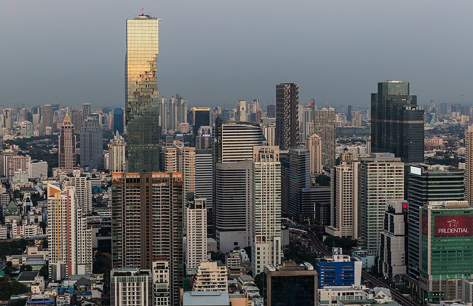
タイ
写真（縮小・トリミング） Ninara from Helsinki, Finland／CC BY 2.0
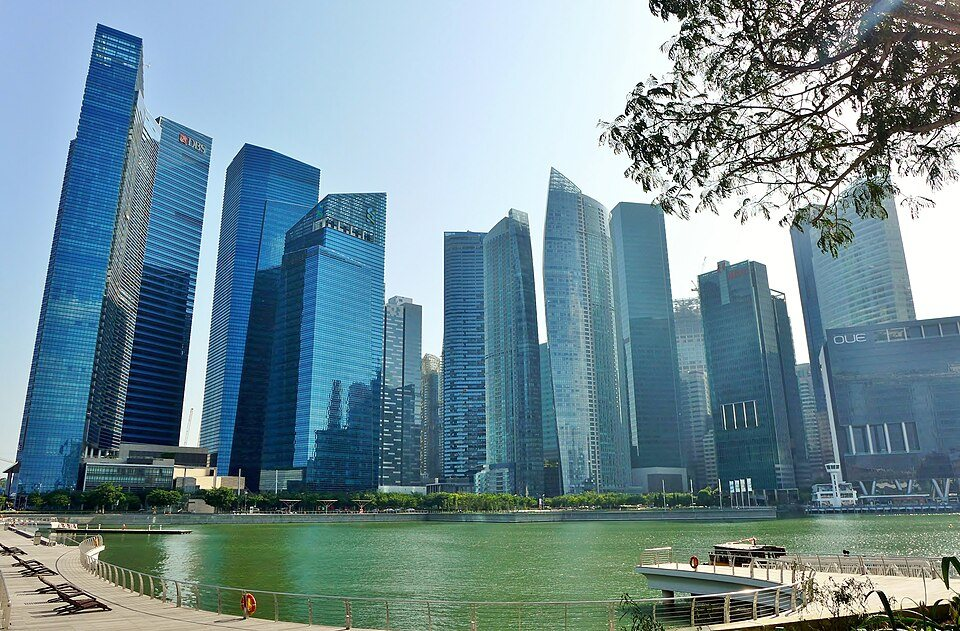
シンガポール
写真（縮小・トリミング） Bahnfrend／CC BY-SA 4.0
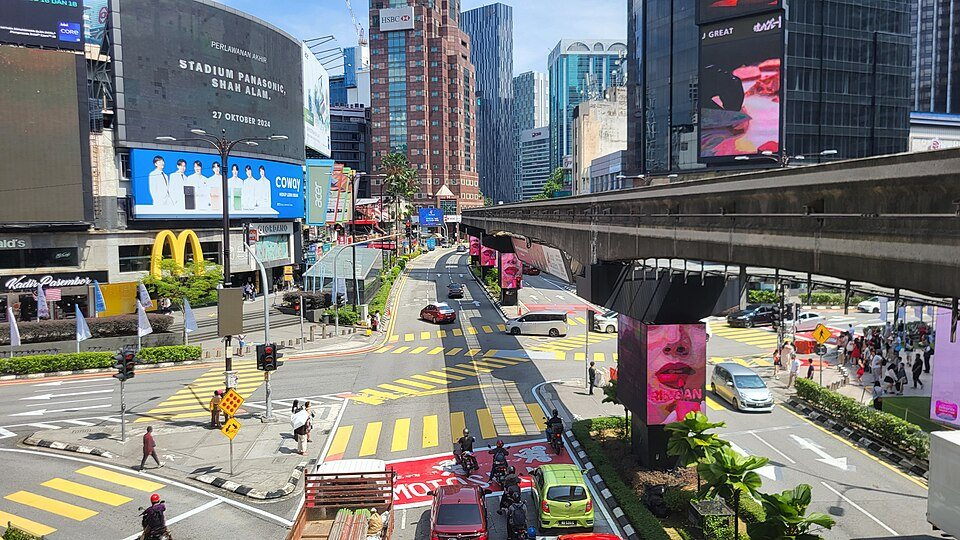
マレーシア
インドネシア
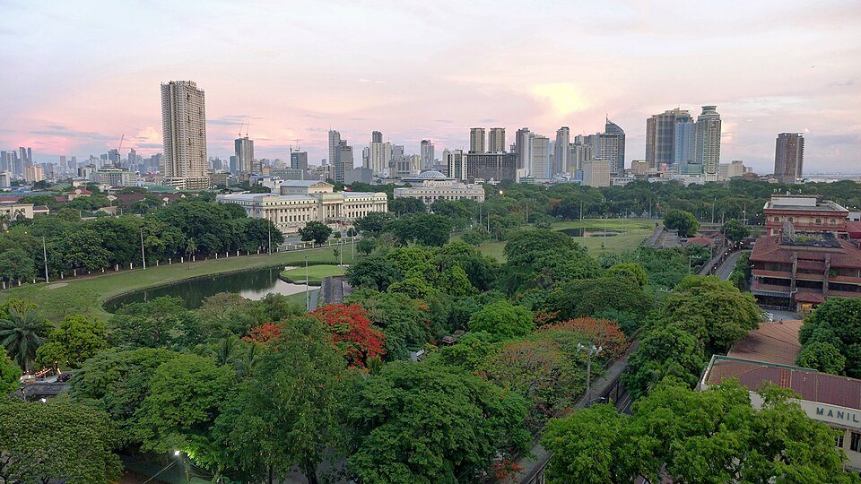
フィリピン
写真（縮小・トリミング） Bahnfrend／CC BY-SA 4.0
オーストラリア
写真（縮小・トリミング） Benh LIEU SONG (Flickr)／CC BY-SA 4.0
オーストラリア
写真（縮小・トリミング） Melbpal／CC BY-SA 4.0
インド
写真（縮小・トリミング） Marcin Białek／CC BY-SA 4.0
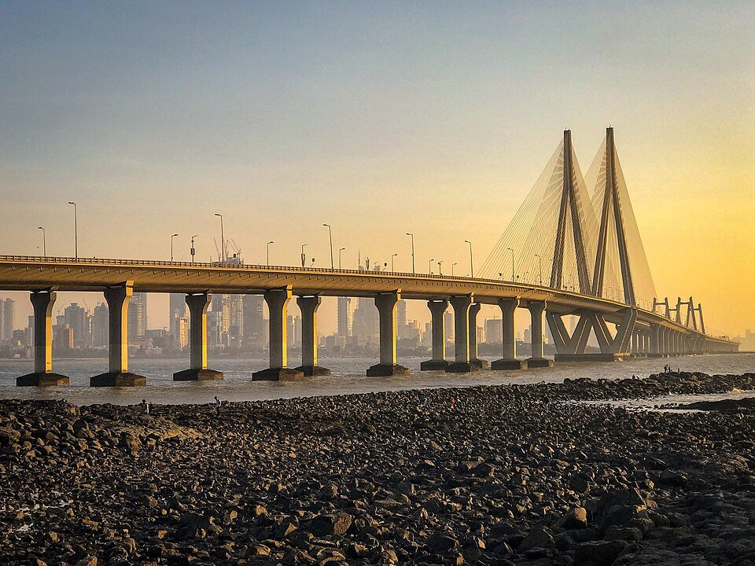
インド
写真（縮小・トリミング） Rutiknatekar／CC BY-SA 4.0
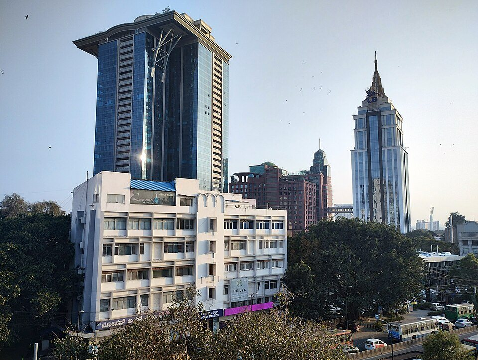
インド
写真（縮小・トリミング） Gpkp／CC BY-SA 4.0
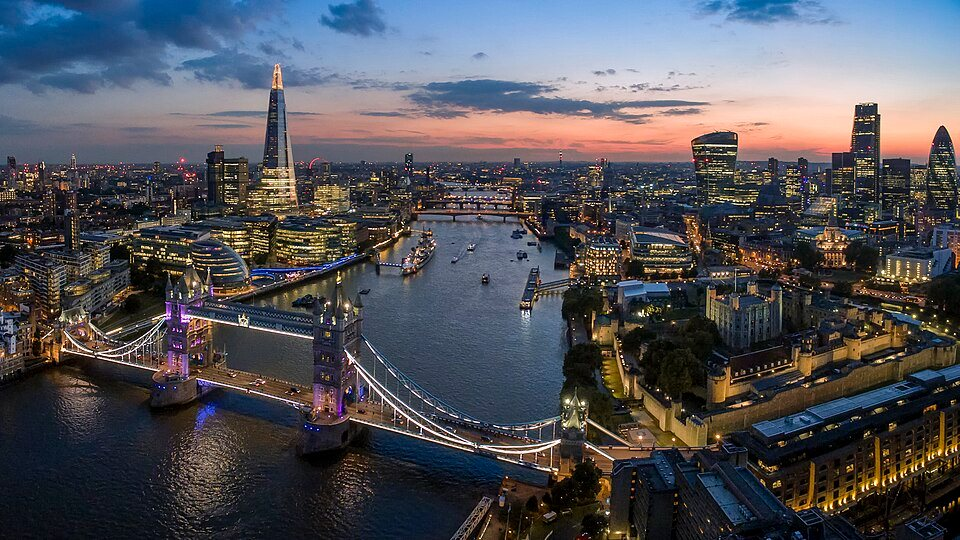
イギリス
写真（縮小・トリミング） Ilya Grigorik／CC BY-SA 3.0
フランス
写真（縮小・トリミング） Yann Caradec from Paris, France／CC BY-SA 2.0
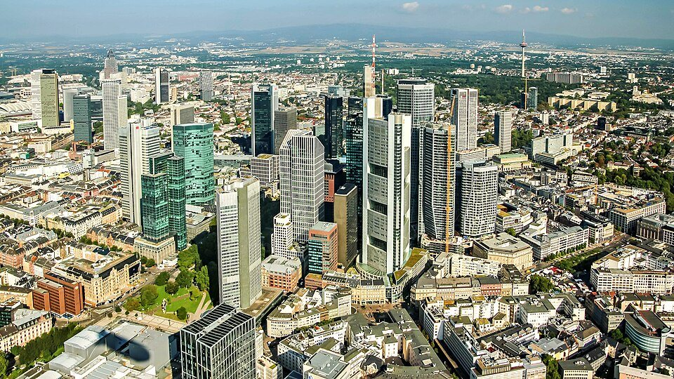
ドイツ
写真（縮小・トリミング） Dr. Thomas Liptak／CC BY-SA 4.0
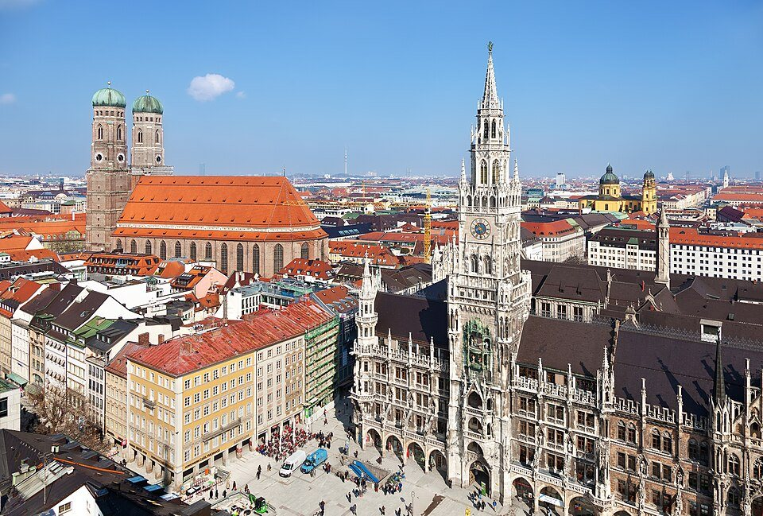
ドイツ
写真（縮小・トリミング） Thomas Wolf, www.foto-tw.de／CC BY-SA 3.0 DE
オランダ
イタリア
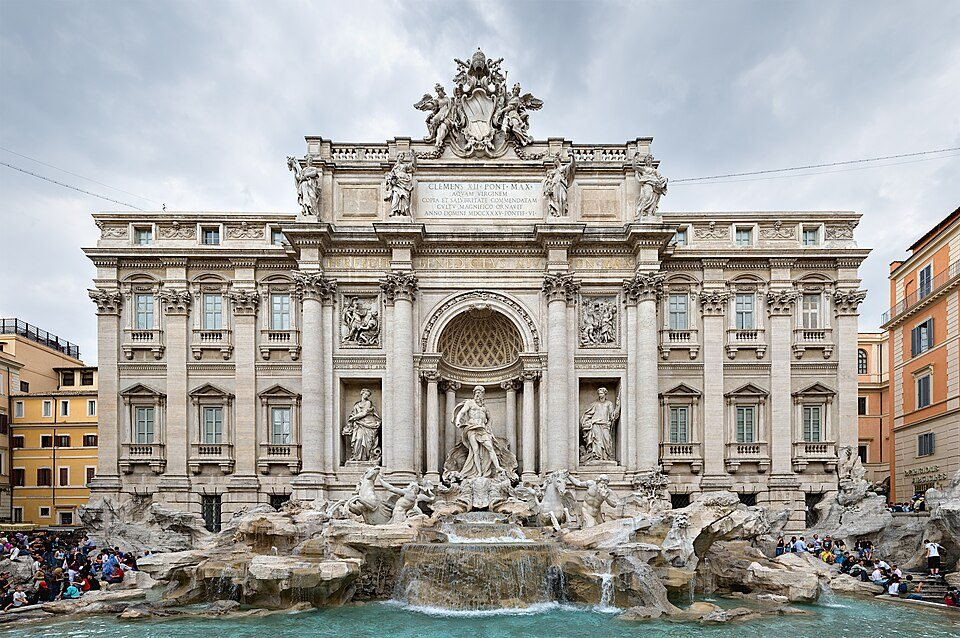
イタリア
写真（縮小・トリミング） DAVID ILIFF／CC BY 3.0
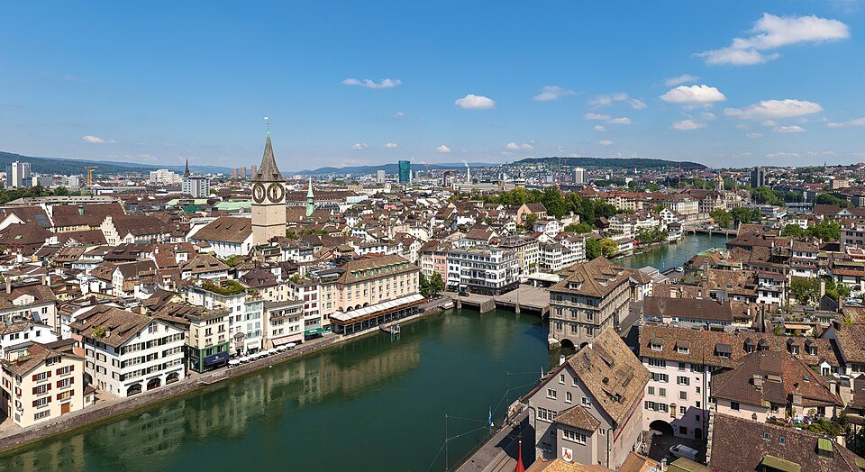
スイス
写真（縮小・トリミング） Thomas Wolf, www.foto-tw.de／CC BY-SA 3.0 DE
スペイン
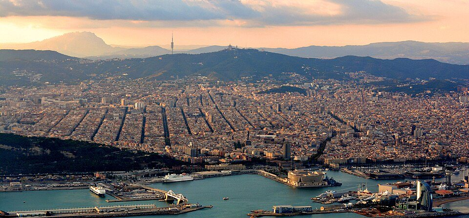
スペイン
アメリカ
写真（縮小・トリミング） Dllu／CC BY-SA 4.0
アメリカ
写真（縮小・トリミング） Ralf Roletschek／CC BY-SA 3.0
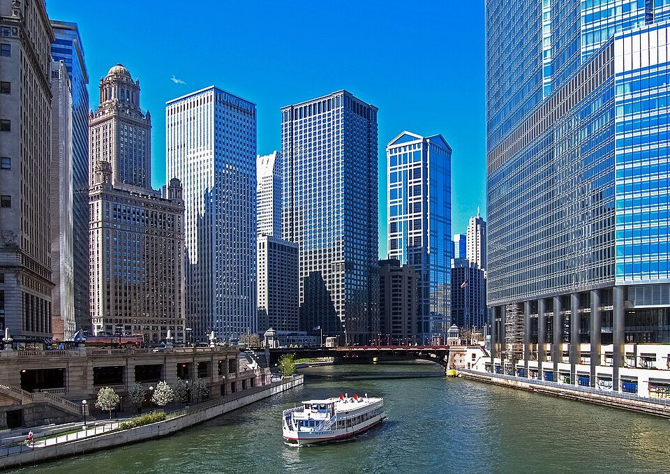
アメリカ
写真（縮小・トリミング） John Picken (derivative work: Georgfotoart)／CC BY 2.0
アメリカ
写真（縮小・トリミング） Ian Howard／CC BY 2.5
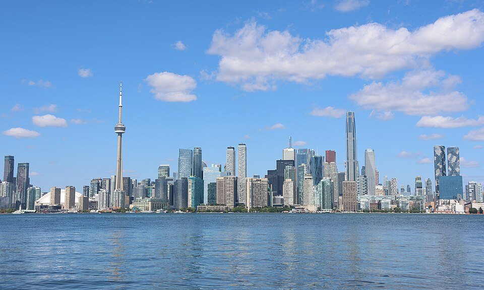
カナダ
写真（縮小・トリミング） Dillan Payne／CC BY-SA 4.0
日本航空（JAL）課税（日本）
全日本空輸（ANA）課税（日本）
キャセイパシフィック課税（香港）
エティハド航空非課税（UAE に個人所得税なし）
エバー航空課税（台湾）
平均 運航乗務員（グループ連結・2025年3月期）
平均 運航乗務員（グループ連結・2024年3月期）
平均 運航乗務職（ANA／ANAウイングス／エアージャパンの合計・2026年3月期）
条件つきの給与例 副操縦士（First Officer）
年次有給 28日
最低総飛行時間 1,500時間（3,000時間が望ましい）・うち機長時間 500時間以上・英語能力証明レベル4以上
条件つきの給与例 二等航空士（Second Officer）
年次有給 21日
最低総飛行時間 250時間
円額は比較用の換算です（1 HKD＝20.2744円・2026-08-22 時点）。現在の為替レートではありません。
求人の掲載額 機長 A320（求人の上限）
総5,500時間・多人数運航ガラスコックピットの機長時間 2,500時間・A320系の機長時間 1,500時間・直近12か月に A320系・入社日に59歳未満・英語能力証明レベル4以上
求人の掲載額 副操縦士 A320（求人の上限）
A：総2,000時間かつ多人数運航ガラスコックピット1,500時間かつ同型500時間／B：総1,500時間かつ A320系1,000時間。加えて直近12か月に A320系・入社日に50歳未満・英語能力証明レベル4以上
円額は比較用の換算です（1 AED＝43.2825円・2026-08-22 時点）。現在の為替レートではありません。
公式募集例 副操縦士（4年契約）
最低総飛行時間 2,000時間・多人数運航ジェット（最大離陸重量20トン超）500時間・ICAO ATPL・英語能力証明レベル4
円額は比較用の換算です（1 USD＝158.95円・2026-08-22 時点）。現在の為替レートではありません。
家賃相場 品川京急が羽田空港までの所要時間を案内している駅
アットホーム「品川駅の家賃相場」2026年10月11日に開いた時点の表示
アットホームに載っている物件の平均家賃をもとに、アットホームが出した相場の目安（直近3か月に掲載された物件）
物件が少ないときは相場を出せないことがあり、相場のしぼり込み条件は物件の検索条件と一致しないことがある
家賃相場 品川京急が羽田空港までの所要時間を案内している駅
アットホーム「品川駅の家賃相場」2026年10月11日に開いた時点の表示
アットホームに載っている物件の平均家賃をもとに、アットホームが出した相場の目安（直近3か月に掲載された物件）
物件が少ないときは相場を出せないことがあり、相場のしぼり込み条件は物件の検索条件と一致しないことがある
成約の家賃の平均（当サイトが計算） 東涌（映灣園）空港行きの路線バス（S1）が出る駅がある
28Hse「映灣園 租務成交」2026年7〜9月の成約（10月11日に開いた時点の掲載分）
28Hse が団地ごとに載せている「租務成交」（成約）の行のうち、日付が2026年7月1日〜9月30日の行から当サイトが計算した平均。一戸建て・メゾネットの行は除き、全部の欄が同じ2行は1つと数える。5件以上そろった間取りだけを出し、100香港ドル単位に丸めた。載っているのは成約の一部で、行の出どころは書いていない（28Hse 自身の90日の件数はもっと多い）。ページに期間の字は無く、1か月の家賃と読んだ。管理費・差餉を含むかは書いていない。28Hse の利用規約は読めていない
円額は比較用の換算です（1 HKD＝20.2744円・2026-08-22 時点）。現在の為替レートではありません。
募集家賃の平均 ハリファ・シティ
Bayut「Abu Dhabi Rental Market Report H1 2026」2026年上半期
Bayut に不動産会社が載せた、入居できる集合住宅の募集家賃の平均（ルームシェアを除く）。成約した額ではない（2026年1〜6月）
出どころの表は1年あたりの額。ここでは12で割って、1か月あたりにしている
円額は比較用の換算です（1 AED＝43.2825円・2026-08-22 時点）。現在の為替レートではありません。
募集の家賃の中央値 南崁（蘆竹區）エバー航空の事業所がある
591租屋網「租金行情」桃園市・蘆竹區2026年10月8日更新（直近3か月）
591 に載った物件の家賃から、591 が独自の集計で出した額（直近3か月の中央値（10月8日更新）。参考まで）
円額は比較用の換算です（1 TWD＝4.9966円・2026-08-22 時点）。現在の為替レートではありません。
写真（縮小・トリミング） 日本航空（JAL） 4300streetcar／CC BY 4.0 全日本空輸（ANA） Masakatsu Ukon／CC BY-SA 2.0 キャセイパシフィック Melv_L - MACASR／CC BY-SA 2.0 エティハド航空 Anna Zvereva／CC BY-SA 2.0 エバー航空 Melv_L - MACASR／CC BY-SA 2.0